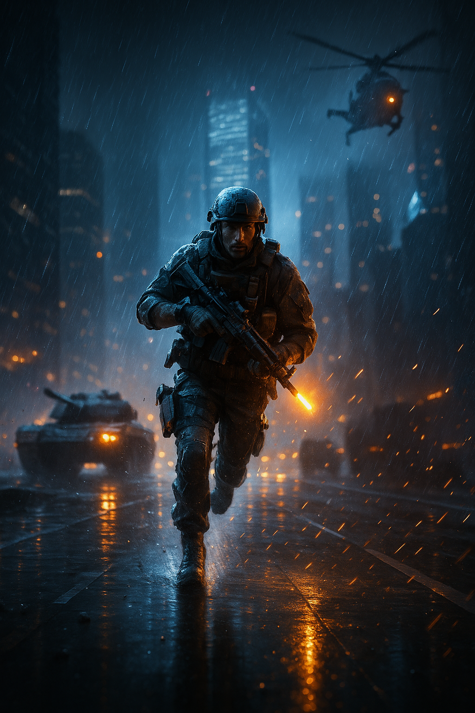

Galeria
Rotas e comando
- Dragon Ball Z
- Chegada em
- Salto para Namekusei
- God of War
- Passagem por Midgard
- Acesso ao Lago dos Nove
- The Last of Us
- Contato com os Vaga-Lumes
- Evitar áreas altamente infectadas
Portais (a imagem é um link)
-

Dragon Ball Z - Portal de energia -

God of War - Portal rúnico em Midgard -

Battlefield 4 - Avanço sob chuva -

The Last of Us - Ruínas e fenda no céu -

Nexus - Portais do multiverso